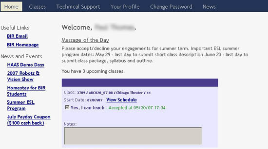
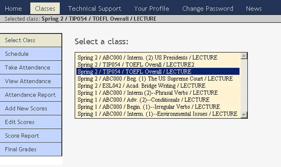
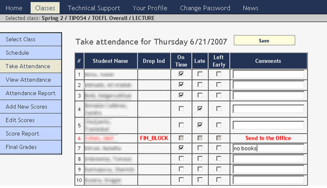
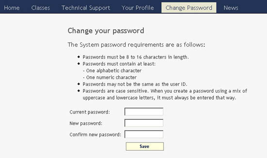
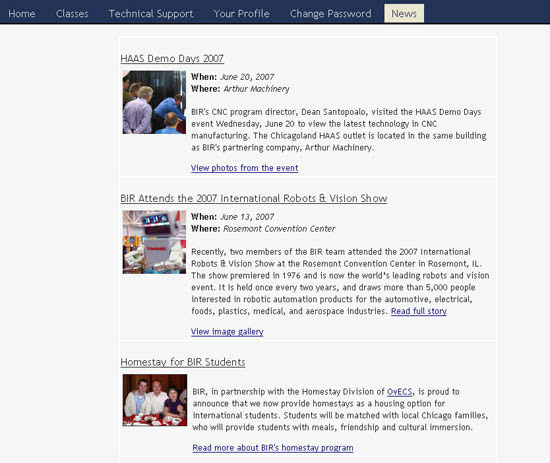
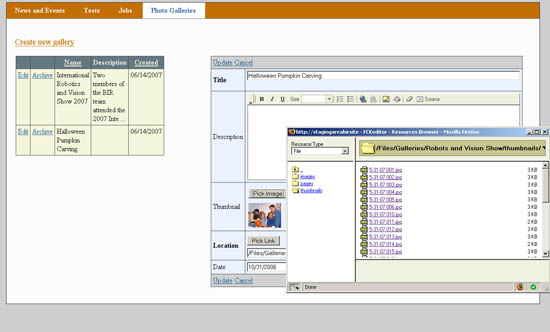
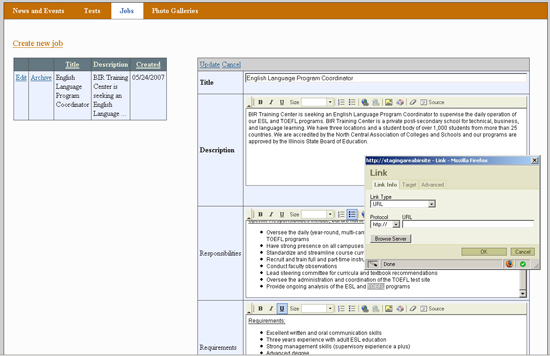
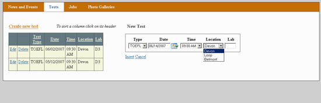
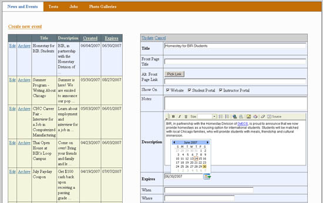

Web Development
Instructor Portal
Web-based classroom management application for instructors which allows them to: sign up to teach classes, see class schedules, take attendance, store grades, maintain personal information, and other features. Written using the ASP.Net framework (version 2.0) in VB.Net on the server with some JavaScript on the client.





Website Administrator
Content management system for school website. Provides interface to database-stored news, events, test locations, photo galleries, and job ads. Written using the ASP.Net framework (version 2.0) in VB.Net, with moderate use of the Microsoft AJAX library.



